MLLM-guided data synthesis
1 Introduction
One of the biggest challenges in human motion generation domain is the shortage of data.
the current biggest text-motion dataset in research field HML3D only contain 14,616 motion clips and 44,970 descriptions composed by 5,371 distinct words, even though doubled by mirroring motion for data augmentation, but the effect of increasing diversity is very little.
such small dataset is causing overfitting in general motion generation models. Relying on Animate 3D product, we can generate high quality motion data.
benefited of the thrilling in LLM area and MLLM area. We are able to establish a massive and diversified synthetic dataset for text to motion generation task. we built a private owned dataset with over 344,476 motion clips with 344,476 descriptions composed by 12,139 distinct words
2 Data Analysis for HumanML3D dataset
2.1 Similarity Test
shown in Table 1, inspired by Text-Motion-Retrieval(TMR), we use MPNet to calculate the text description similarity between training data and test data. If we could find a text in training data is having a similarity score higher than 90% or 95%, we believe it means a very similar semantic motion has been used to train the model. as Table 1 showing,
such high text similarity between training set and test set can potentially cause the model overfitting in real-world cases.
Table 1
2.2 Action Distribution
We are using the POS key in HML3D ground truth data to visualize the action classes in HML3D dataset. for better visualization we only show top 30 classes in bar chart and top 50 in pie chart. the Fig 1&2 showing the action distribution in HML3D.
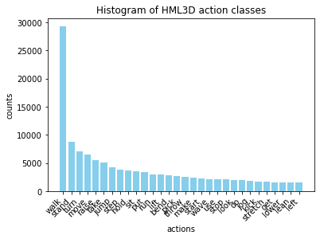
Figure 1
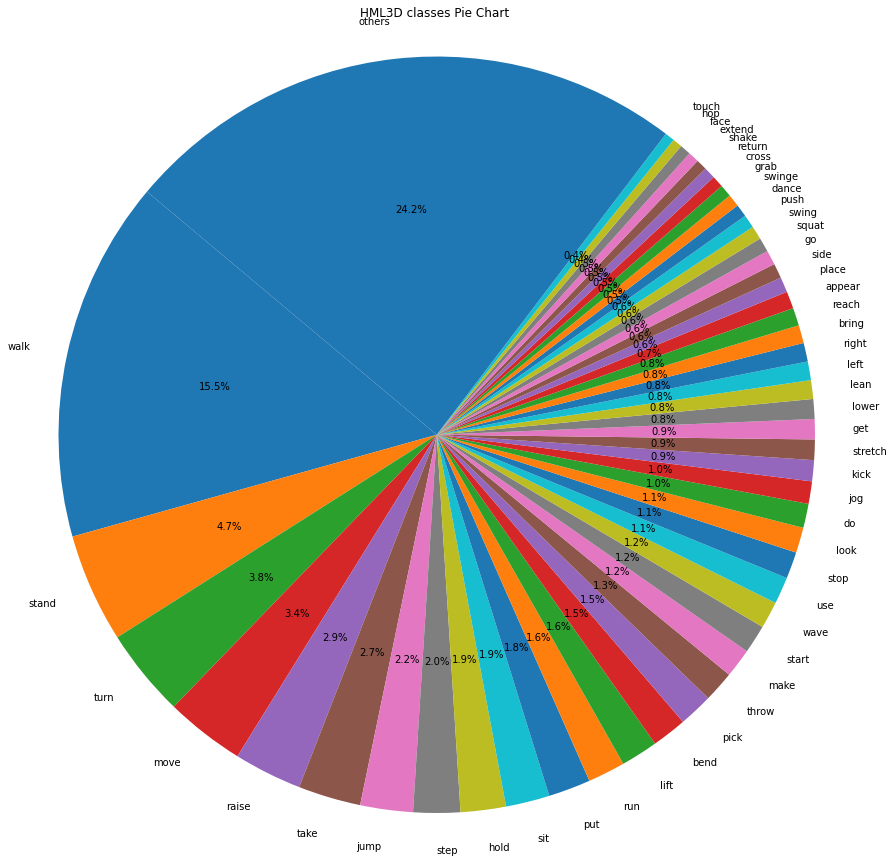
Figure 2
3 Data Preparation for DM dataset
3.1 Video-Motion data creation
*Our data is collected from A3D users who volunterly grant us permission to use their data to improve our services' quality
Inside our Animate 3D pipeline, We have applied multiple self-evaluation methods. namely they are pose realistic discriminator,
high-pass score of joint change in time series. We set a threshold to keep action's diversity at the same time ensure the motion quality
Since our A3D pipeline also support upper body mode(more focus on facial and fingers tracking), and Multi-person mode. We need to fliter out those type of samples via database first.
After this, we obtained a relatively high quality Video-Motion dataset
3.2 Video-Text data creation
We experiment multiple MLLM/Multimodal model options, they are namely Gemini1.5, VideoChat2, Mplug2, Valor. additionally,
we have tried different hyper-parameters tuning and prompt engineering to create various output
from each model. We used Internvideo to calculate their video-to-text retrieval Top1 recall score.
We also do Quantitative evaluation of user preference. Figure 3 is showing an example of our
survey, and Table 2 shown best video-to-text retrieval top1 recall score for each model. We received 17 users' feedback on the survey
Table 2
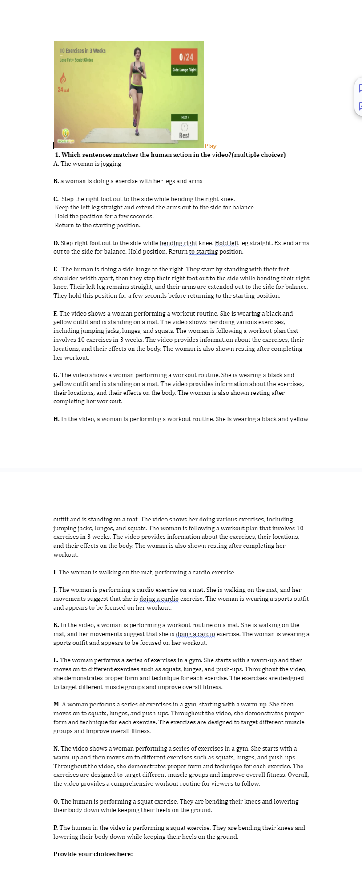
Figure 3
Table 3
as we can see, gemini 1.5 is the clear winner, so we decided to use it to generate our video-text data
4 Data Analysis for DM dataset
4.1 Action Keyword Distribution
We applied POS algorithm on generated texts and analze its distribution. as shown in Figure 4&5, we noticed the biggest difference between HML3D and our dataset is our top1 action class is Dance.
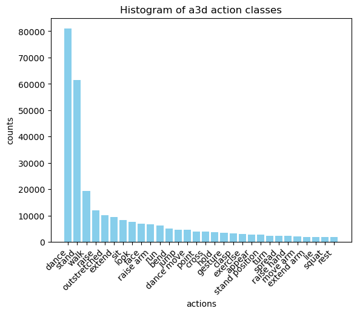
Figure 3
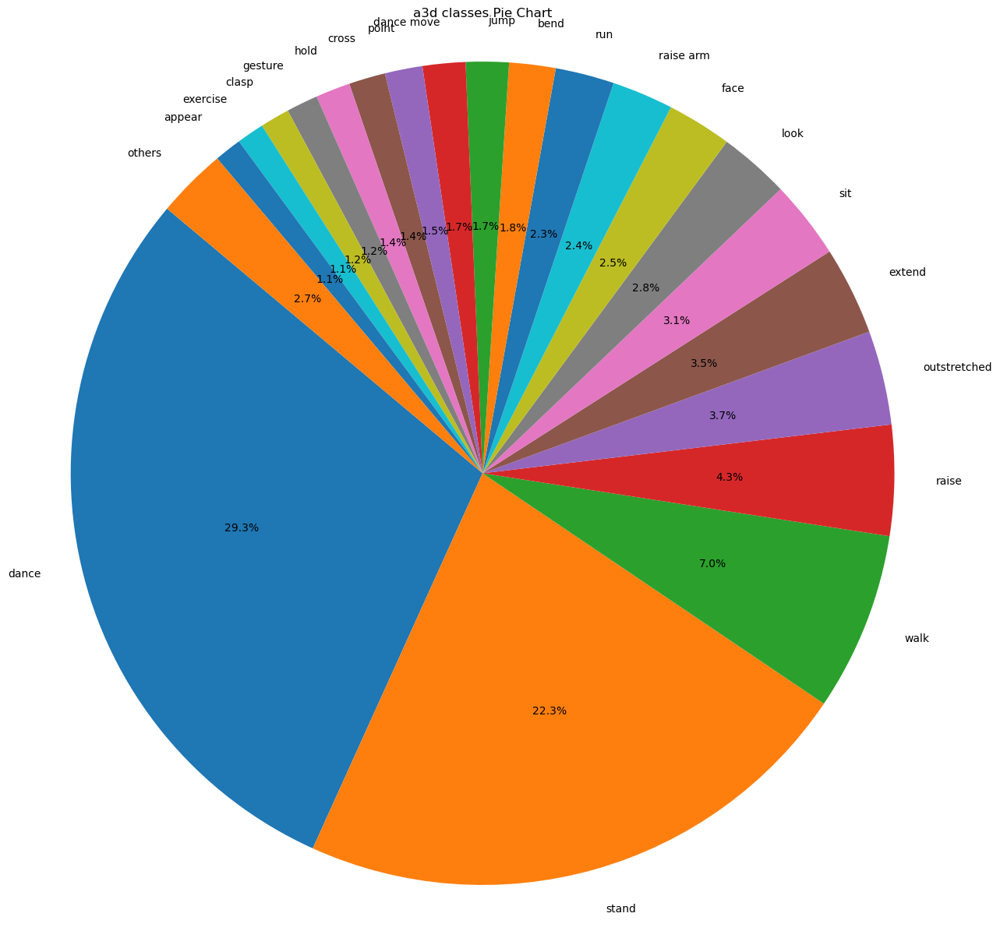
Figure 4
4.2 Action embedding Distribution
We want to have a deep insight of the relation between embedding distribution and keyword distribution.
firstly, we are using TMR to convert motion and text into embedding space. after applying PCA algorithm, we visualize the
relationship between text embeddings and visual embeddings. to seeing the modality gap(alignment)
condition for well-trained TMR model. We realized there are some modality gap between Text Embeddings and Motion Embeddings.
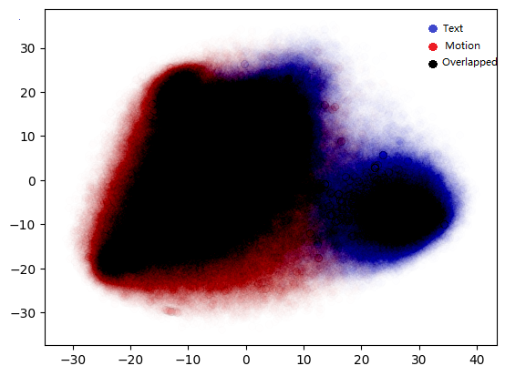
Figure 5
We also visualize 4 keyword classes' distribution in text and motion embedding spaces. Since the data point are transformed and reduced to 2-D space, we believe their distribution would be more distinguishable in original dimension space.
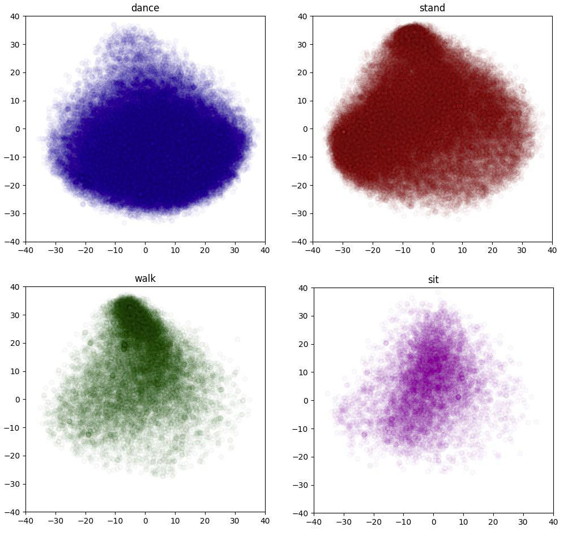
Figure 7.keyword classes distribution in Motion embedding space
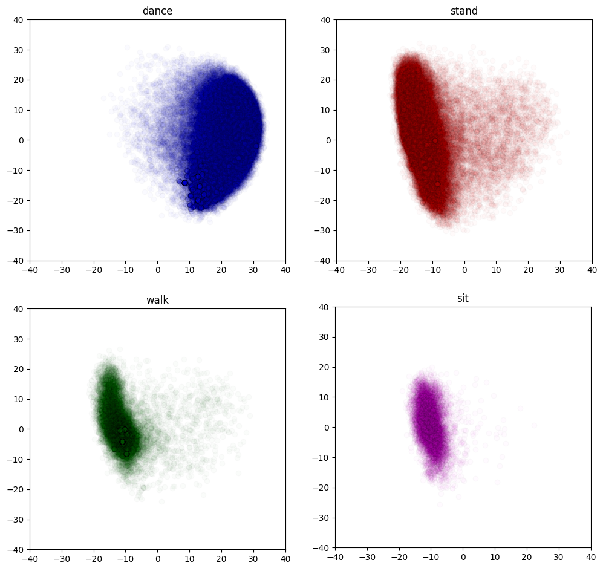
Figure 8.keyword classes distribution in Text embedding space
4.3 Text and Motion metric insight
We also test the TMR text-motion retrieval and motion-text retrieval performance in our dataset
Table 3.Motion-Text Retrieval
Table 4.Text-Motion Retrieval
5 Clustering
after we collected all insightful analyzed information of this dataset, we made sure that all metrics are in the normal range, further more, based on the above results, we know that
our data is not equally distributed, it is potential the harm the model's performance if some types of motion are dominating the dataset.
in order to ease the bias of the dataset. we decided to do clustering to group similar type of action together. so that during training, we can set different sampling rate in different datasets.
in order to do so, we first applied DBSCAN and K-means for clustering. according to the result, K-means performs a better result so we used k-means for our first iteration of clustering job.
because of the characteristics of k-means, more centroids are clustered in the dense area to make sure each cluster maintain similar amount of datapoint, which means, for each cluster, their average distance to centroid can be various. what want our final result to be various and each class is more representative. in order to do so, we utilized hierarchical clustering to achieve an unbalanced clustering result, aiming to group repeated actions together
matching the imbalance in the a3d dataset. Initially, we avoided
hierarchical clustering due to its computational expense and time
consumption. With a total of 380K data points, hierarchical clustering necessitates computing an n × n distance matrix for each added
layer, which is impractical directly. Therefore, we performed hierarchical clustering only on the centroids obtained from k-means to
significantly reduce computation time.
We fine-tuned the threshold to derive a final set of 12 clusters, en-
suring each cluster’s semantic coherence while meeting the specified
requirements.
we need to test if text embedding or motion embedding can provide a better clustering results.In fig. 9, we present two examples of motion clustering results and
text clustering results. In this example, the motion clustering focuses
more on lower-level semantic motions such as "raise hands in front
of chest and walk," which encompasses multiple actions with similar
textual meanings like "zombie walk," "dumbbell lift walking," "both
hands shooting," etc.
On the other hand, the text clustering results provide di-
verse movements that share the same textual meaning, as
shown in fig. 10. with the example of "sword fight."
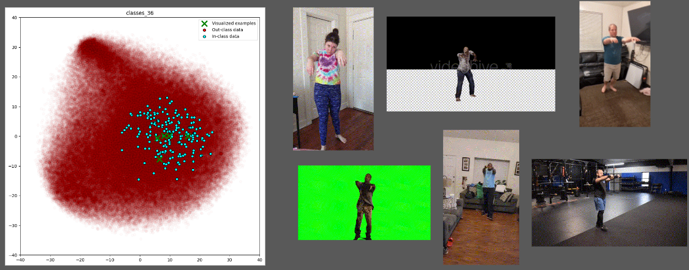
Figure 9. clustering based on motion embeddings
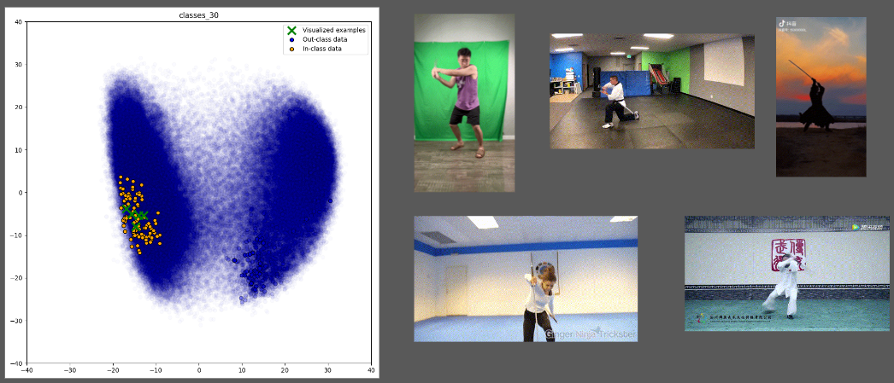
Figure 10. clustering based on text embeddings
Eventually, we picked text embedding to do clustering. fig. 11 displays the centroids of these 12 clusters across the entire
sample space. and Fig 12 reveal the data size of each cluster
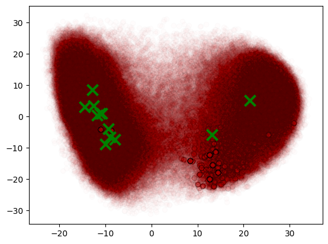
Figure 11
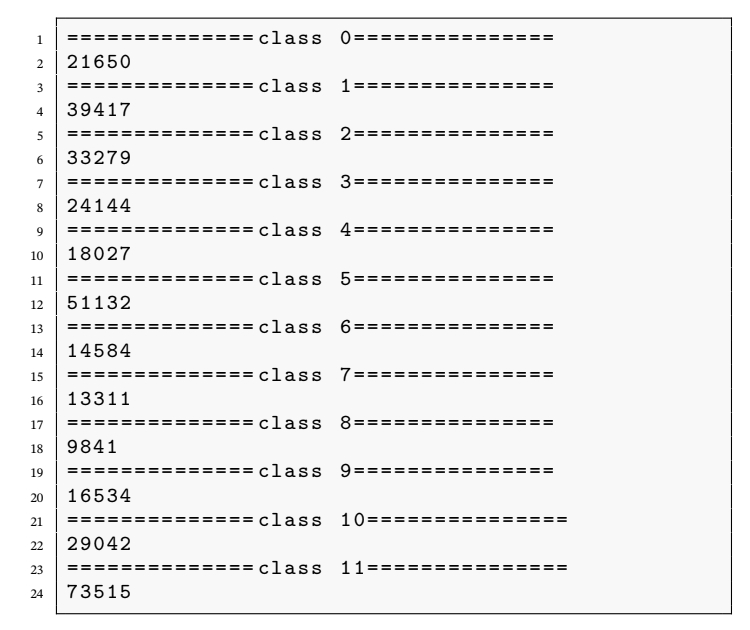
Figure 12
6 Metric
We evaluate our model using a private test set to assess performance in our use cases. Table 1 compares the text-to-motion model, which was previously built and trained with synthetic data using only text-motion paired data, against the text-video-to-motion model trained with synthetic data utilizing both text and video modalities. The results demonstrate that incorporating visual prompts did not negatively impact performance with text prompts.
Table 5
We tested our model on HML3D testset to have a clearer comparison, as we can see, by adding DM dataset, it increased model's performance.
It is worth to mention that we are replacing the text-encoder and motion-encoder in the original T2M paper by TMR for a priciser evaluation. so the number above not in the same range as the state-of-art models' papers
7 visualization results
8 Conclusion
by using MLLM-guided synthetic data, group data based on semantic meaning and applying weigted sampling ratio can help boost the motion generation accuracy.
9 Reference
Chen, S., He, X., Guo, L., Zhu, X., Wang, W., Tang, J., & Liu, J. (2023, April 17). Valor: Vision-audio-language omni-perception pretraining model and dataset. arXiv.org. https://arxiv.org/abs/2304.08345
Wang, Y., Li, K., Li, Y., He, Y., Huang, B., Zhao, Z., Zhang, H., Xu, J., Liu, Y., Wang, Z., Xing, S., Chen, G., Pan, J., Yu, J., Wang, Y., Wang, L., & Qiao, Y. (2022, December 7). InternVideo: General Video Foundation models via generative and Discriminative Learning. arXiv.org. https://arxiv.org/abs/2212.03191
Li, K., He, Y., Wang, Y., Li, Y., Wang, W., Luo, P., Wang, Y., Wang, L., & Qiao, Y. (2024, January 4). VideoChat: Chat-centric video understanding. arXiv.org. https://arxiv.org/abs/2305.06355
Xu, H., Ye, Q., Yan, M., Shi, Y., Ye, J., Xu, Y., Li, C., Bi, B., Qian, Q., Wang, W., Xu, G., Zhang, J., Huang, S., Huang, F., & Zhou, J. (2023, February 1). MPLUG-2: A modularized multi-modal foundation model across text, image and video. arXiv.org. https://arxiv.org/abs/2302.00402
Team, G., Georgiev, P., Lei, V. I., Burnell, R., Bai, L., Gulati, A., Tanzer, G., Vincent, D., Pan, Z., Wang, S., Mariooryad, S., Ding, Y., Geng, X., Alcober, F., Frostig, R., Omernick, M., Walker, L., Paduraru, C., Sorokin, C., … Vinyals, O. (2024, August 8). Gemini 1.5: Unlocking multimodal understanding across millions of tokens of context. arXiv.org. https://arxiv.org/abs/2403.05530
Guo, C., Mu, Y., Javed, M. G., Wang, S., & Cheng, L. (2023, November 29). Momask: Generative masked modeling of 3D human motions. arXiv.org. https://arxiv.org/abs/2312.00063
Zhang, J., Zhang, Y., Cun, X., Huang, S., Zhang, Y., Zhao, H., Lu, H., & Shen, X. (2023, September 24). T2M-GPT: Generating human motion from textual descriptions with discrete representations. arXiv.org. https://arxiv.org/abs/2301.06052
Petrovich, M., Black, M. J., & Varol, G. (2023, August 25). TMR: Text-to-motion retrieval using contrastive 3D human motion synthesis. arXiv.org. https://arxiv.org/abs/2305.00976
Generating Diverse and Natural 3D Human Motions from Texts Chuan Guo, Shihao Zou, Xinxin Zuo, Sen Wang, Wei Ji, Xingyu Li, Li Cheng CVPR, 2022